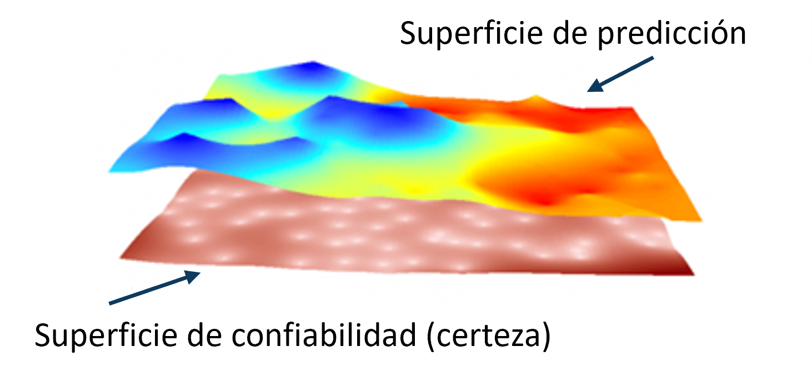
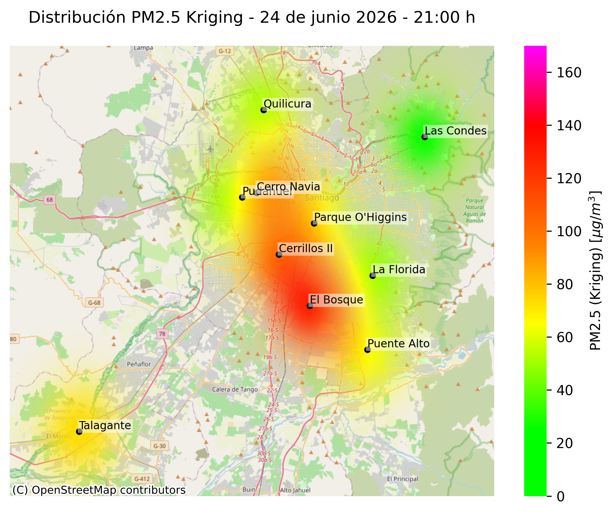
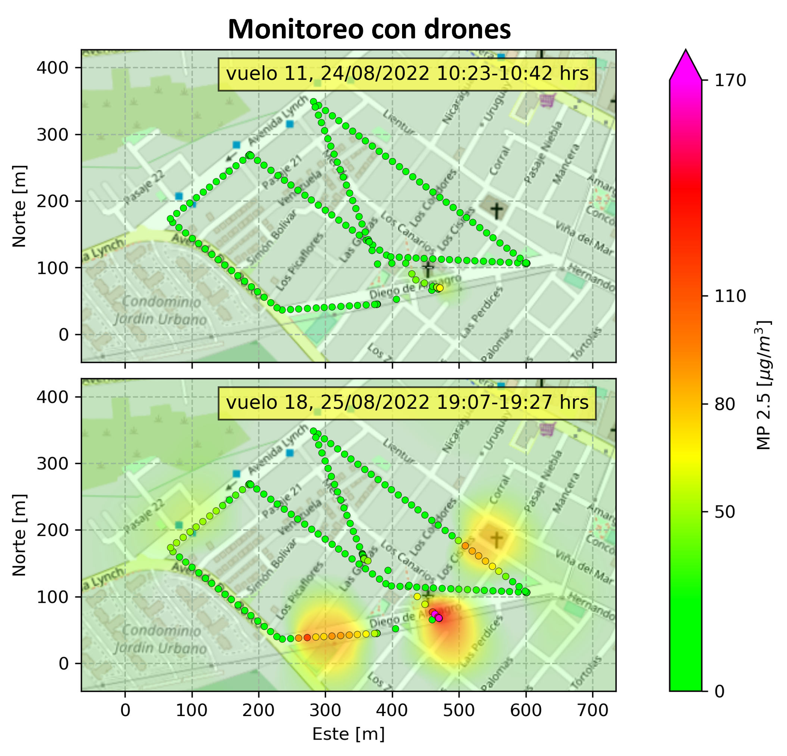

Predicción Espacial de Calidad del Aire mediante Interpolación Geoestadística
Desarrollo de un esquema de interpolación espacial y temporal capaz de transformar mediciones discretas provenientes de sensores ambientales en mapas continuos de contaminación, utilizando Kriging Ordinario para la estimación espacial y Cubic Splines para modelar la evolución temporal del fenómeno.
Data Scientist & Geospatial Analyst
Desarrollo de Algoritmos Geoestadísticos · Airflux

El Problema
Las redes de monitoreo ambiental se componen de un número limitado de estaciones capaces de medir la concentración de contaminantes en ubicaciones específicas. Aunque estos sensores entregan información de alta calidad, cada medición representa únicamente un punto discreto del territorio, dejando grandes áreas sin observaciones directas.
Sin embargo, la contaminación atmosférica es un fenómeno continuo en el espacio y dinámico en el tiempo. En la práctica, muchas estaciones reportan datos en ventanas de muestreo amplias —frecuentemente de una hora—, lo que implica una baja densidad temporal de observaciones. Esta resolución limita la capacidad de representar adecuadamente la evolución del fenómeno, especialmente cuando se busca analizar cambios progresivos de las masas de aire contaminada.
Frente a estas limitaciones, el desafío consiste en abordar de manera conjunta las dimensiones espacial y temporal del fenómeno. En el dominio espacial, se busca estimar valores en zonas no observadas a partir de mediciones dispersas; mientras que en el dominio temporal, el objetivo es densificar la información para construir representaciones más continuas y fluidas del comportamiento del contaminante.
La Estrategia de Solución
Para abordar este problema fue necesario separar el fenómeno en sus dos componentes fundamentales: su comportamiento en el espacio y su evolución en el tiempo. En lugar de utilizar un único algoritmo para resolver ambas dimensiones, se diseñó un motor compuesto por dos etapas complementarias, donde cada una modela una característica específica del fenómeno físico.
1. Reconstrucción Espacial mediante Kriging
La primera etapa estima la concentración del contaminante en aquellas regiones donde no existen sensores mediante el modelo de Kriging Ordinario, una técnica geoestadística que aprovecha la autocorrelación espacial presente en las mediciones para reconstruir una superficie continua a partir de observaciones discretas.
Dado que Kriging es un método geoestadístico y no determinista, permite estimar tanto la concentración más probable como la incertidumbre asociada a cada predicción. El resultado es un mapa probabilístico que describe el fenómeno junto con su nivel de confianza en cada punto del dominio.

2. Reconstrucción Temporal mediante Cubic Splines
Una vez obtenidos los mapas espaciales para cada instante de medición, el segundo desafío consistió en representar la evolución del contaminante entre observaciones consecutivas. Dado que los sensores registran datos en ventanas horarias, la dinámica del fenómeno queda muestreada con una resolución temporal relativamente gruesa, limitando el análisis de su evolución continua.
Para abordar esto, se implementó una interpolación temporal mediante Cubic Splines, permitiendo densificar la serie temporal y generar estados intermedios entre mediciones. Esto hace posible analizar el fenómeno en escalas más finas —como resoluciones de 5 o 15 minutos—, produciendo transiciones suaves y visualizaciones continuas del desplazamiento de las masas de aire, facilitando su interpretación dinámica.
¿Por qué Kriging?
Existen numerosos métodos capaces de interpolar información espacial, como la interpolación por distancia inversa (IDW), vecinos más cercanos o superficies suavizadas mediante Splines. Sin embargo, estos enfoques estiman valores utilizando únicamente relaciones geométricas entre los puntos, sin considerar explícitamente el comportamiento estadístico del fenómeno que se desea modelar.
En este proyecto se optó por implementar Kriging Ordinario debido a que la concentración de un contaminante atmosférico presenta una fuerte autocorrelación espacial: dos mediciones cercanas tienden a ser más similares que dos mediciones alejadas. Kriging incorpora esta propiedad directamente en el modelo, utilizando un semivariograma para describir cómo cambia la similitud entre las observaciones a medida que aumenta la distancia entre ellas.
Esta característica representa una ventaja importante respecto a otros métodos de interpolación. En lugar de calcular únicamente una superficie continua, Kriging determina los pesos óptimos de cada sensor resolviendo un problema de optimización que minimiza la varianza del error bajo la restricción de mantener estimaciones insesgadas. Como resultado, cada predicción se encuentra respaldada por un modelo estadístico de la dependencia espacial observada en los datos.
$$\hat{Z}(\vec{x})=\sum_{i=1}^{n}\lambda_i\,Z(\vec{x}_i)$$
En la expresión anterior, $\hat{Z}(\vec{x})$ representa la concentración estimada en una ubicación $\vec{x}=(x, y)$ donde no existen mediciones directas, mientras que $Z(\vec{x}_i)$ corresponde a las observaciones registradas por los sensores en los puntos $\vec{x}_i = (x_i, y_i)$. Los pesos $\lambda_i$ no dependen únicamente de la distancia entre puntos, sino del modelo de autocorrelación descrito por el semivariograma, permitiendo que cada estimación refleje el comportamiento espacial real del fenómeno.
Arquitectura del Motor de Interpolación
Una vez definida la estrategia de modelamiento, el siguiente paso fue implementar un pipeline capaz de transformar las mediciones entregadas por la red de sensores en mapas continuos de contaminación. El proceso combina la interpolación espacial mediante Kriging con un modelo de interpolación temporal, permitiendo reconstruir tanto la distribución espacial como la evolución dinámica del fenómeno.
A nivel computacional, el flujo de procesamiento se estructura en cuatro etapas principales: preparación de los datos, estimación espacial, interpolación temporal y generación de las superficies finales para su visualización.
import numpy as np
from pykrige.ok import OrdinaryKriging
from scipy.interpolate import CubicSpline
# ==========================================================
# 1. Lectura de datos provenientes de la red de sensores
# ==========================================================
x_coords = ...
y_coords = ...
data_values = ...
# ==========================================================
# 2. Interpolación espacial mediante Kriging
# ==========================================================
OK = OrdinaryKriging(
x_coords,
y_coords,
data_values,
variogram_model="spherical",
verbose=False,
enable_plotting=False
)
grid_z, grid_variance = OK.execute(
"grid",
grid_x,
grid_y
)
# grid_z -> concentración estimada
# grid_variance -> incertidumbre de la estimación
# ==========================================================
# 3. Interpolación temporal mediante Cubic Splines
# ==========================================================
cs = CubicSpline(
t_obs,
z_series,
axis=0
)
t_dense = np.linspace(
t_obs.min(),
t_obs.max(),
500
)
z_smooth = cs(t_dense)
# ==========================================================
# 4. Visualización del campo continuo
# ==========================================================
# Cada superficie interpolada se utiliza para generar
# mapas y animaciones del comportamiento del contaminante.
Esta arquitectura desacopla completamente la estimación espacial de la evolución temporal, permitiendo reemplazar cualquiera de ambos modelos sin modificar el resto del pipeline. Como resultado, el motor puede adaptarse fácilmente a otros fenómenos geoespaciales donde existan mediciones discretas distribuidas sobre un territorio.
Resultados Obtenidos
El sistema fue evaluado en distintos escenarios reales y experimentales, demostrando su capacidad para reconstruir campos de contaminación a partir de redes de monitoreo dispersas y datos de distinta resolución espacial y temporal.
Caso 1: PM2.5 en la Región Metropolitana
Estimación espacial de PM2.5 a partir de la red de estaciones de monitoreo. El modelo reconstruye superficies continuas que permiten identificar gradientes urbanos asociados a emisiones y procesos de dispersión atmosférica. Las áreas sin representación del heatmap no deben interpretarse como zonas necesariamente limpias, sino como regiones donde la incertidumbre del modelo es elevada y, por tanto, la confiabilidad de la estimación es menor. En contraste, las zonas representadas en tonos verdes corresponden a sectores con aire más limpio.

Caso 2: Mediciones con drones
Integración de mediciones de alta resolución espacial obtenidas mediante drones, donde cada observación alimenta el modelo durante el sobrevuelo de la región. Esto permite identificar hotspots de contaminación y analizar su evolución intra-diaria, comparando mediciones en un mismo punto durante la mañana y la tarde.

Caso 3: Incendios forestales
Reconstrucción espacio-temporal de PM2.5 en la Región Metropolitana durante los incendios forestales ocurridos en diciembre de 2022, caracterizados por alta dinámica y variabilidad tanto espacial como temporal del contaminante.
Aplicación Interactiva
Para llevar este motor de interpolación a un entorno operativo y exploratorio, se desarrolló una aplicación interactiva en Streamlit que permite consultar datos reales de la red de monitoreo SINCA mediante su API pública, y aplicar en tiempo real el modelo de Kriging Ordinario sobre las estaciones seleccionadas.
El usuario puede seleccionar contaminantes, elegir rangos temporales y visualizar cómo el sistema reconstruye el campo espacial de concentración a partir de mediciones discretas obtenidas directamente desde la red oficial de monitoreo ambiental.
La aplicación realiza una consulta dinámica a la API de SINCA, procesa los datos de estaciones en tiempo real, y ejecuta el pipeline de interpolación espacial, generando mapas continuos de concentración junto con su incertidumbre asociada. El resultado se visualiza de forma interactiva, facilitando el análisis exploratorio del comportamiento de los contaminantes en la Región Metropolitana.
Stack Tecnológico
Librerías Científicas
- NumPy: manipulación eficiente de datos numéricos y estructuras espaciales.
- SciPy: interpolación temporal mediante Cubic Splines y herramientas de optimización.
- PyKrige: implementación de Kriging Ordinario para interpolación geoestadística.
- Pandas: procesamiento y estructuración de datos provenientes de la API SINCA.
Herramientas y Plataforma
- Streamlit: desarrollo de aplicación interactiva para exploración del modelo en tiempo real.
- API SINCA: fuente oficial de datos de calidad del aire en la Región Metropolitana.
- Matplotlib / Plotly: visualización de superficies espaciales e incertidumbre del modelo.
- Python: lenguaje base para todo el pipeline de modelamiento y despliegue.
Conclusiones
Este proyecto demuestra cómo la combinación de técnicas geoestadísticas y métodos de interpolación temporal permite transformar datos ambientales discretos en representaciones continuas de alta fidelidad. La integración de Kriging Ordinario con modelos de suavizado temporal entrega una visión coherente tanto del estado espacial como de la dinámica del contaminante.
Uno de los principales aportes del sistema es la incorporación explícita de la incertidumbre en las predicciones espaciales, lo que permite no solo estimar concentraciones, sino también identificar zonas donde la red de monitoreo presenta baja cobertura o alta variabilidad espacial.
La implementación en una aplicación interactiva basada en Streamlit y datos en tiempo real de la API SINCA valida el enfoque en escenarios reales, demostrando su potencial como herramienta de análisis exploratorio para calidad del aire y planificación ambiental.
En conjunto, el motor desarrollado no solo funciona como una solución de visualización avanzada, sino como una base extensible para futuros sistemas de monitoreo inteligente, predicción ambiental y soporte a la toma de decisiones en contextos urbanos.